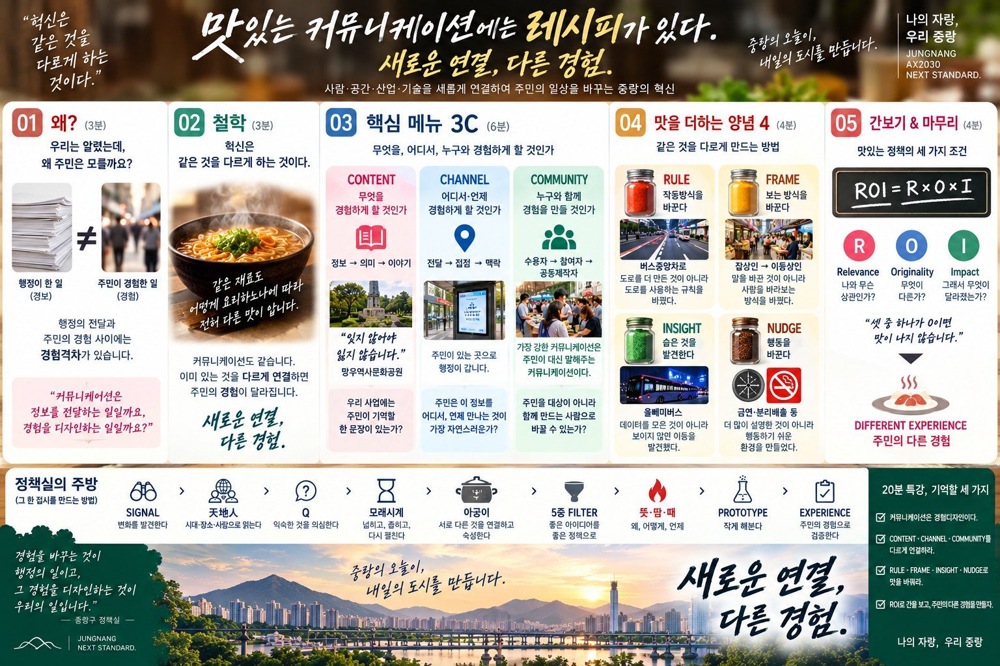
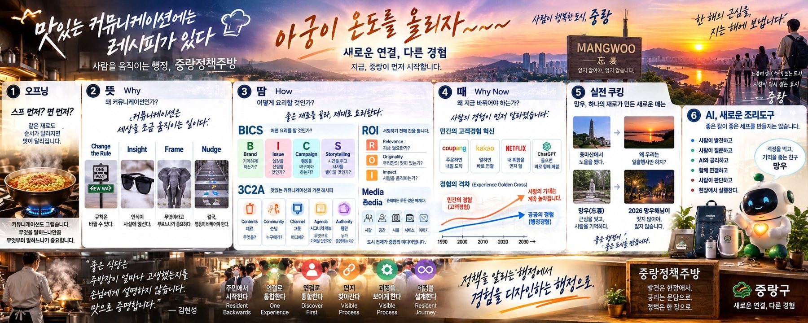

자료실 · 강연 · 영상 · 인포그래픽
꺼내 쓰는 레시피
강연에서 쓴 장표와 영상, 정리해 온 그림들을 모았습니다. 필요한 분은 내려받아 쓰셔도 좋습니다. 출처만 밝혀 주세요.
강연 자료
2026.10.1 중랑구 직원 특강 「맛있는 커뮤니케이션에는 레시피가 있다」

본편 · 30장
정책셰프의 레시피 · 20분 본편
재료와 양념, 도구와 맛보기. 경험격차를 경험디자인으로 넘어 경험복지로 가는 길. 10월 1일 강연에 쓴 그대로입니다. 고쳐 쓸 수 있는 PPT 원본은 따로 요청해 주세요.

전체판 · 52장
정책셰프의 레시피 · 전체판
본편 30장에 부록 장표를 더했습니다. 10월 15일 부서장 심화 특강을 준비하는 초안 장표가 함께 들어 있어, 심화 특강 뒤에 새 판으로 바뀝니다.
영상
첫 10년의 물음, 커뮤니케이션은 사회문제 해결에 어떤 역할을 할 수 있을까
보건복지부 금연광고 「치아변색」
「자학」 편에 이어 나온 광고입니다. 경고문 대신 20대가 실제로 신경 쓰는 치아를 보여 줬습니다. 금강기획 시절의 작업입니다.
인포그래픽
누르면 원본 크기로 열립니다

방송과 보도
더 많은 기록은 아카이브에 있습니다
- 2026.05.13
- 2026.02.26[신간] 『소상공인을 버린 AI』브릿지경제
- 2024.07.19배달의민족 독립 선언식KBC 영상 뉴스
- 2024.08.16광주 공공앱 독립운동 주목경향신문
- 2016.02.23
- 2014.07
- 2005.04.01흡연은 자학한국일보